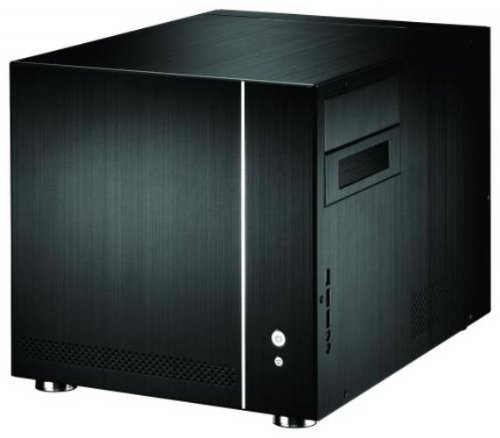
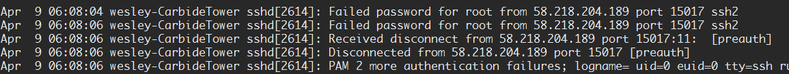

Setting Up an SSH Server
Cleaning out the computer
The case my brother used was a modified Lian Li. It's a pretty small case considering the amount of technology stuffed in there, and he went all out, man. All the hardware was jam-packed in there, with little budging room. Since the computer was now in my hands, I decided I didn't want this kind of tightness. I looked online for a mid-sized case and settled with a Corsair-Carbide. I like the extra breathing room to keep my hardware nice and cool.

Taking the hardware out was a problem. For the Lian Li case, the entire case center is designed to slide out for an easy assembly. But the modifications, as well as packing an over-the-top graphics card made this task undoubtedly hard. I ended up dismantling the entire thing. I guess the main takeaway for me was that you shouldn't try to make your computer as small as possible. Sure it's portable, but you'll end up making eventual hardware adjustments extraordinarily difficult.
Oh, and there was also another thing that made this whole dismantling process difficult. For the longest time, I couldn't figure out how to take out the CPU fan. For those of you who don't know, a CPU fan is attached to the motherboard via 4 pop-in pins. But for this fan, it was different. I looked all over the place to see if other people had the same problem, but no dice. I figured the pins were faulty and I would forcibly yank them off and replace them later. When I had a reunion with my brother, I asked him about it, and his response made me facepalm super hard.
It was superglued.
I'm so done, dude
Anyway, I put it all together, crossed my fingers, and it worked!
Wiping the memory
This isn't the first spare computer that flew my way, and so I usually have a routine I like to do before working with the computer. The first thing is to wipe down the memory. That's more than just removing the operating system, mind you. I have a CD that sets an entire hard-drive to 0's. That's literally the cleanest wipedown you can possibly do. I do this because you never know what sorts of things happened on a computer, or if there might be some virus lingering around. By wiping the memory clean, it would be as if the computer were entirely new. This process took about 24 hours.
The next thing I like to do is install a Linux distribution. I choose Linux because it's versatile and its free. It also opens up my options for the computer, since I'm using Windows. It's nice to have both operating systems available at hand.
Setting up an SSH server
Okay, this is the part where it was my first time doing such a thing. I Googled everything I didn't know, and to be honest, the forums I visited were a lot more serviceable than I expected. Turns out that setting up an SSH server isn't too difficult. You can access configuration files to adjust the server to your needs. Navigating with the terminal was a new difficulty for me, though. Sometimes I had to write down where all the configuration files were a lot of the time so I wouldn't get lost.
Managing my server privacy
Opening up your server to the public is a really scary thing. If you set up your server with password authentication, people can try to brute force their way into your server. And they actually do. Here, check it out!

What you're seeing here is a user continuously trying different passwords to get into my server. I originally thought that just password authentication was enough, but after seeing this, I decided I'm not going to risk it.
I could also opt for a key-based authentication. Here's an analogy of how it works. Your computer has a key, and you create a lock that only your key can open. You put that lock onto the server through whatever means you like. When you connect to the server, the server sees your key and checks through every lock to see if it fits. The benefits of using key-based authentication is that we can disable passwords. In other words, only a select few computers can access the server. But this is also a con, since we'll need to make a new key for every computer that wants to connect. And since I'd like to access my server on the go, I don't see this as an option.
I ended up keeping password authentication, but I also use DenyHosts on top of it to prevent people from brute forcing their way into my server. It's a far cry from key-based authentication, but it works for what I'm trying to accomplish.
Setting up the webserver
Now that I got my SSH server all set up, its time to set up a webserver to service my website. I use the Apache Web Server, which is also pretty easy to set up. Due its similarities with setting up an SSH server, and since I've been playing around the terminal quite some time, I was able to set up my webserver with very little hiccups.
Closing thoughts
Setting up a server is pretty useful if you think about it. If you need some extra processing power, that's the way to go. If you need space to store files, that's the way to go. After setting up this server, I now know a little more about how much I don't know about computers. So basically, it's only the beginning. But hey, it's something, right?